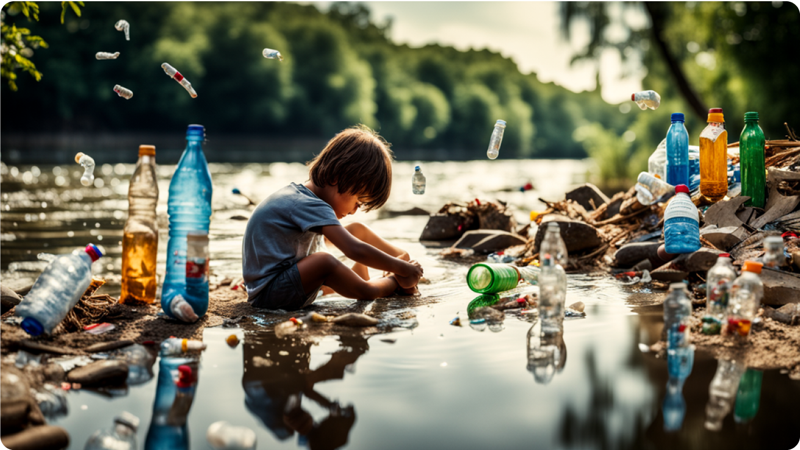
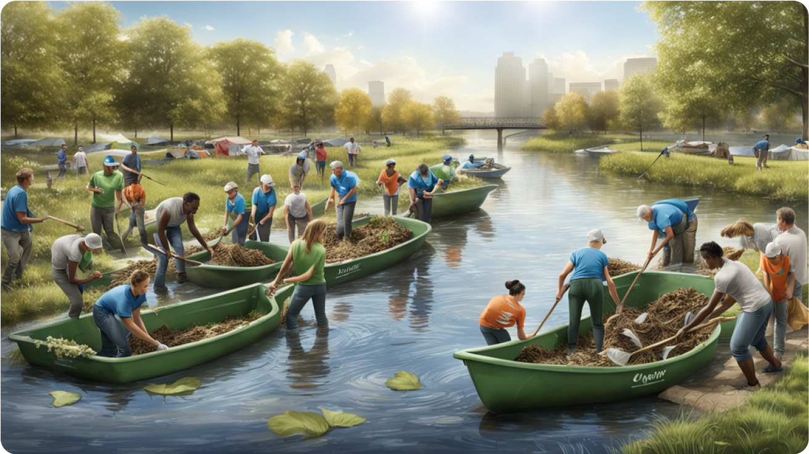

Amid the soothing sounds of flowing water, our rivers are silently
screaming for help, burdened by the weight of our plastic obsession.
The landscapes that once invited contemplation and solace are now
marred by the visible scars of pollution. It's a crisis that demands
our immediate attention and collective action.
Let's delve into the emotional impact of plastic pollution on our
rivers. Imagine a child's joy as they dip their toes into the cool
river water, only to find themselves surrounded by floating
plastic bottles and debris. The innocence of that moment is
shattered, replaced by a profound realization that our negligence
is robbing future generations of the pristine beauty we once took
for granted.
The urgency of addressing plastic pollution in rivers cannot be
overstated. As we witness the heartbreaking consequences, from
wildlife casualties to shattered ecosystems, it's crucial to
channel our emotions into meaningful action. We must hold
ourselves accountable for the plastic we consume, advocate for
sustainable alternatives, and support policies that curb the
production and disposal of single-use plastics.
This strikes worse to those who have witnessed the transformation of
their beloved rivers over the years. The nostalgia of carefree days
spent by the water's edge is replaced by a sense of grief and loss.
Our rivers are not just bodies of water; they are repositories of
memories, the lifeblood of communities, and the essence of our
shared history. Seeing them succumb to the plastic invasion is akin
to watching a cherished friend wither away.
Let our collective sorrow be the catalyst for change. The rivers are
not beyond redemption, but time is of the essence. We have the power
to rewrite the narrative and ensure that the legacy we leave behind
is one of restoration, not regret. Together, let's mend the broken
hearts of our rivers and reclaim the natural sanctuaries that have
nurtured life for centuries.

